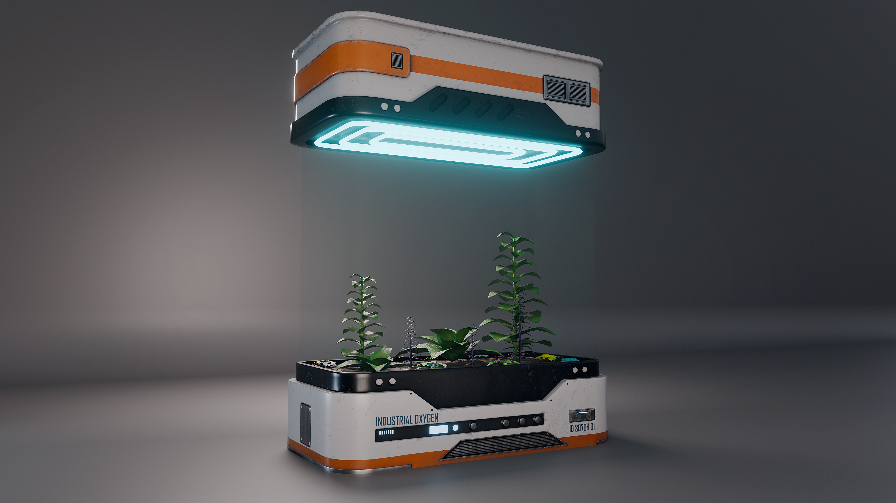
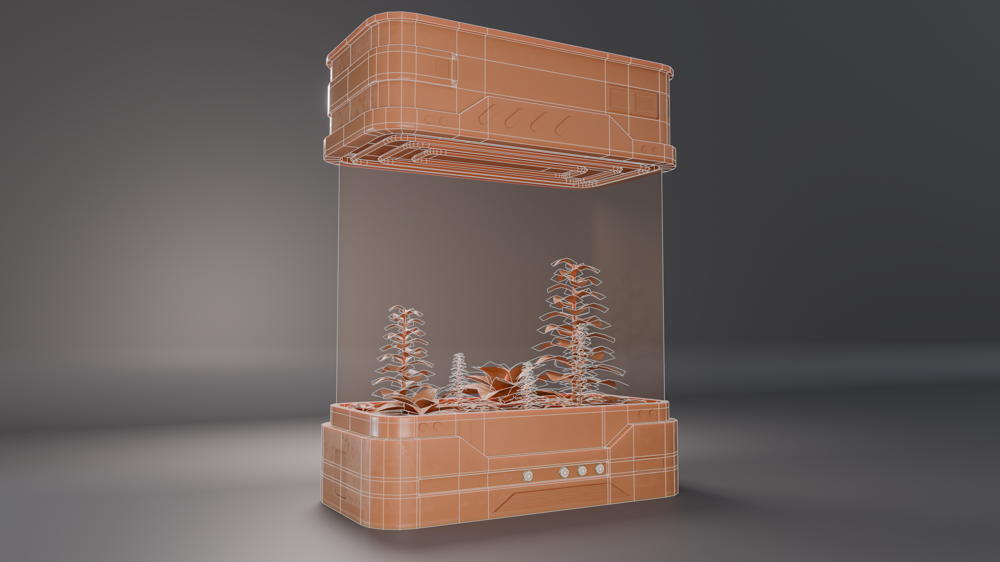
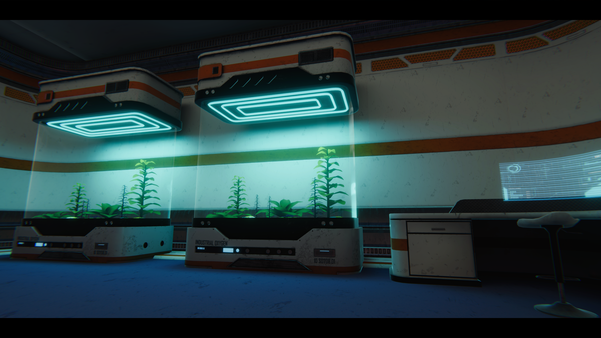

Prop Art — Environment
Sci-Fi Bio Vat
A real-time bio-tech prop created for Rogue Directive: Genesis, designed for a game environment.
Overview
Created for Rogue Directive: Genesis, the Bio Vegetation Vat supports the environmental storytelling and gameplay of the sci-fi biotechnology facility.
"A functional environment prop that helps make the facility's biotechnology setting tangible."
Bio Vat Gallery
Selected renders of the finished Bio Vat prop.

Technical breakdown
Technical breakdowns covering modelling, UVs, materials, texturing, optimisation and real-time presentation.
Sketchfab
The prop was modelled in Blender with a focus on clean topology, efficient geometry and a strong silhouette. The finished asset can be inspected in 3D on Sketchfab, including the wireframe and final material setup.

Wireframe
The wireframe view reveals the mesh structure. Geometry is shaped to support the prop's distinctive design while keeping it suitable for a real-time PC game environment.

Game Render
The game render checks the asset's material response, glass feature and visual readability under baked lighting, showing how the prop sits within its intended biotechnology setting.

Texture Sets
This breakdown shows the base colour, normal, metallic and roughness maps alongside a clay render. The normal map adds surface definition, while roughness controls how broadly or sharply light reflects from each material. Deliberate roughness variation is essential for distinguishing surfaces and creating a convincing, realistic finish and interesting interactions with the environment's lighting.